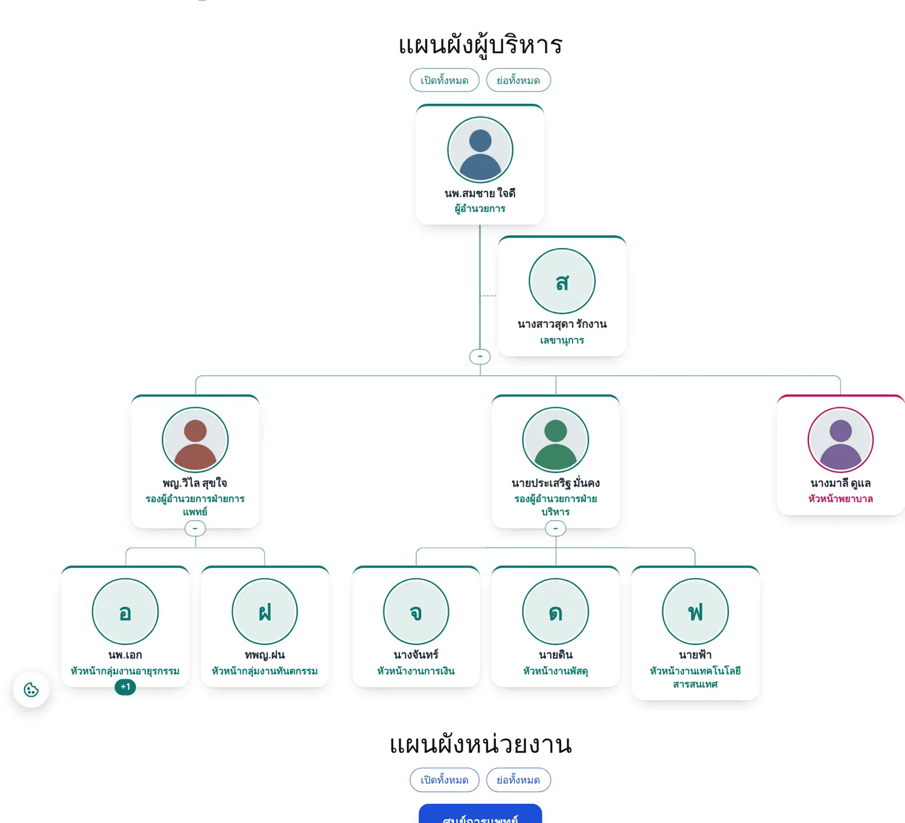
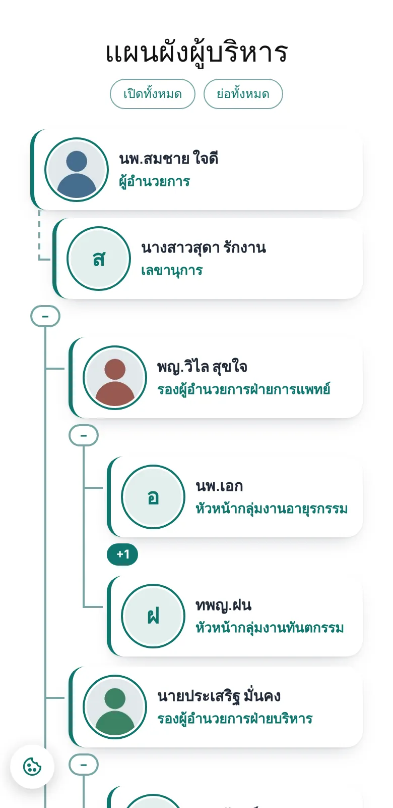
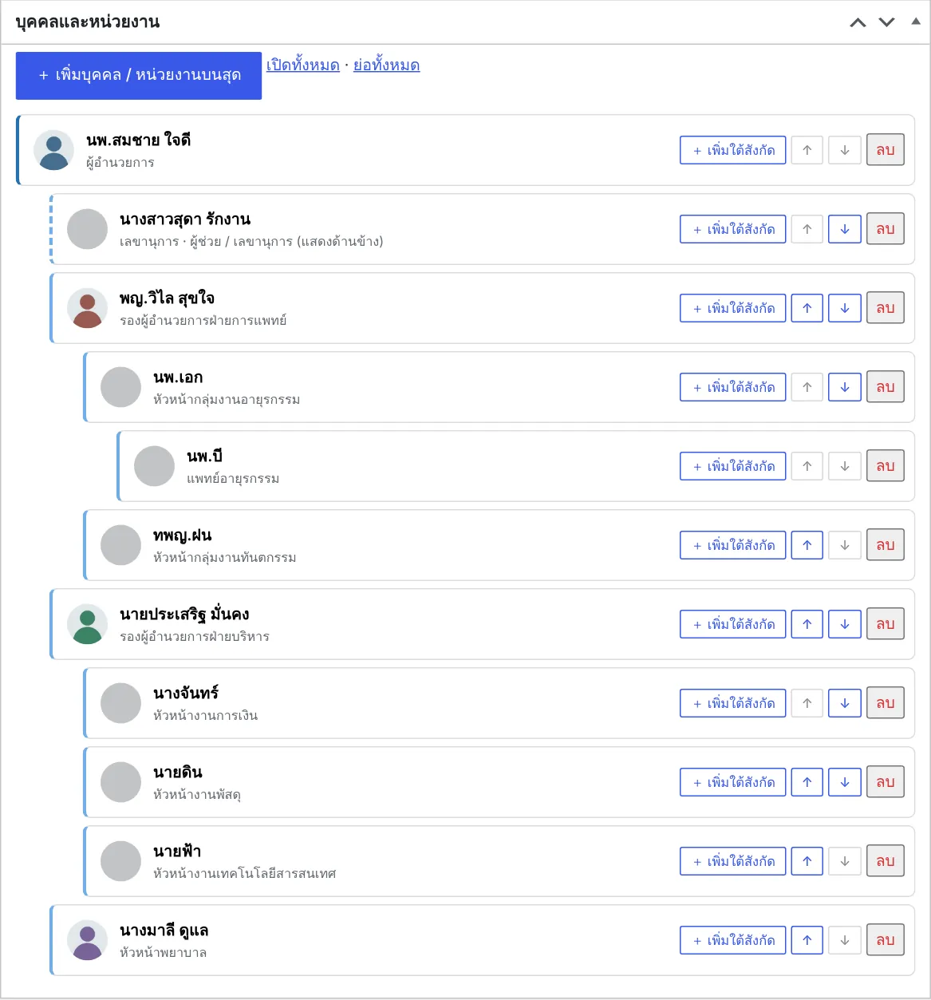
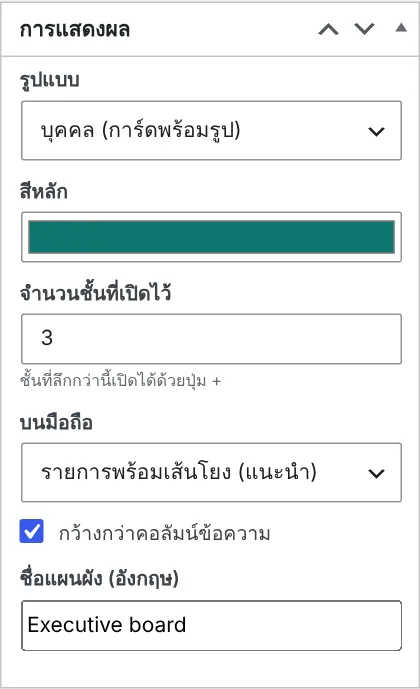

1ความสามารถ


- 3 รูปแบบ: บุคคล (การ์ดพร้อมรูป) · หน่วยงาน (กล่องสี) · กะทัดรัด
- ตัวแก้ไขแบบต้นไม้ เพิ่มใต้สังกัด เลื่อนขึ้น/ลง ตั้งรูปและสีรายกล่อง
- ผู้ช่วย / เลขานุการ แสดงด้านข้างสายบังคับบัญชา
- กำหนดจำนวนชั้นที่เปิดไว้ ชั้นที่ลึกกว่ากด + เปิดได้ · เปิดทั้งหมด / ย่อทั้งหมด
- ลิงก์ไปหน้าประวัติของแต่ละคนได้ · ชื่อและตำแหน่งไทย/อังกฤษ
2เริ่มต้นใช้งาน
- สร้างแผนผัง
แผนผังองค์กร › เพิ่มแผนผัง ตั้งชื่อ เช่น "คณะผู้บริหาร" แล้วกด เพิ่มบุคคล / หน่วยงานบนสุด
- เพิ่มคนใต้สังกัด
กด เพิ่มใต้สังกัด ที่รายการใด ๆ ใส่ชื่อ ตำแหน่ง รูป สีกล่อง ติ๊ก ผู้ช่วย / เลขานุการ ถ้าต้องการให้แสดงด้านข้าง

ตัวแก้ไขแผนผัง (บุคคลและหน่วยงาน) และตัวอย่าง - ตั้งการแสดงผล
กล่อง การแสดงผล ทางขวา: รูปแบบ สีหลัก จำนวนชั้นที่เปิดไว้ รูปแบบบนมือถือ และ กว้างกว่าคอลัมน์ข้อความ สำหรับผังใหญ่

กล่องการแสดงผล - วางในหน้า
คัดลอก shortcode ในกล่องตัวอย่าง เช่น
[idev_orgchart id="20"]หรือใช้บล็อก แผนผังองค์กร แล้วเลือกแผนผัง
3บล็อกและ Shortcode
| Shortcode | ผล |
|---|---|
[idev_orgchart id="20"] | แสดงแผนผัง ID 20 |
[idev_orgchart id="20" title="no"] | ไม่แสดงชื่อแผนผัง |